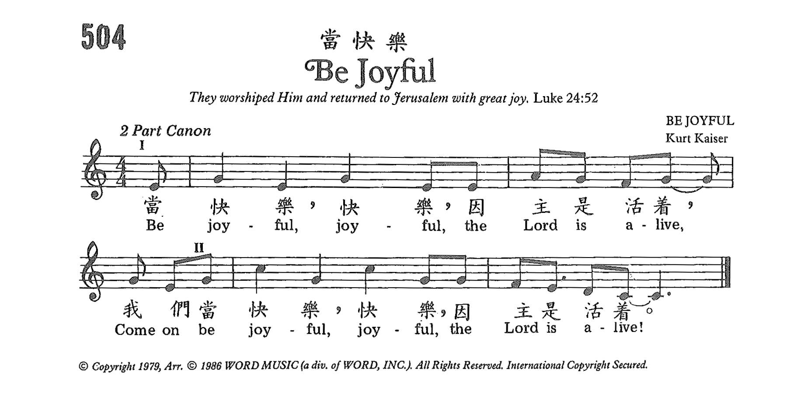

|
|
|
|
Be joyful, joyful, the Lord is alive
|
|
|
https://www.zanmeishige.com/tab/26076.html?songbook=1&index=504
 |
|
|
|
|
-

Be Joyful the Lord is Alive! https://www.youtube.com/watch?v=8KhqT_kMfLA
| Text: | Be Joyful |
| Author: | Kurt Kaiser |
| Tune: | BE JOYFUL |
| Composer: | Kurt Kaiser |
| Short Name: | Kurt Kaiser |
| Full Name: | Kaiser, Kurt |
| Birth Year: | 1934 |
| Death Year: | 2018 |
Kurt Kaiser was born December 17, 1934, in Chicago. He attended American Conservatory of Music and Northwestern University. He moved to Waco, Texas in 1959 in order to join Word Music, where he later worked as vice president and director of music. He arranged and produced several albums. He composed more than 300 songs, and with Ralph Carmichael developed Christian youth musicals. He was a longtime member of the Seventh & James Baptist Church in Waco, Texas. He later helped start Dayspring Baptist Church in Waco. He was an acclaimed pianist who accompanied George Beverly Shea at Billy Graham crusades. He received the Lifetime Achievement Award from the American Society of Composers, Authors and Publishers and was elected to the Gospel Music Hall of Fame. He died November 12, 2018, in Waco.
Dianne Shapiro, from obituary in "Baptist Standard" (https://www.baptiststandard.com/news/obituaries/obituary-kurt-kaiser/) and "Gospel Music Hall of Fame" (http://gospelmusichalloffame.org/kurt-kaiser/) accessed 2-8-2019
Kurt Kaiser 1934–2018
https://en.wikipedia.org/wiki/Kurt_Kaiser
库尔特·凯撒（Kurt Caesar） - Kurt Caesar
库尔特·凯泽（Kurt Kaiser） （出生于1934年12月17日至2018年11月12日的库尔特·弗雷德里克·凯泽（Kurt Frederic
Kaiser） 教堂音乐 作曲家和编曲家。[1]
内容
1 传
2 死亡
3 唱片目录
4 参考
5 外部链接
Kurt Kaiser于1934年12月17日出生在伊利诺伊州的芝加哥。他是伊丽莎白（néeSeumper）和奥托·凯撒（Otto
Kaiser）的第三个孩子。他的父亲出生于德国莱茵兰州，他的母亲出生于德国威斯特法伦州。凯撒（Kaiser）就读于 美国音乐学院 在 芝加哥 而从中获得两个学位
西北大学。库尔特长大后在整个芝加哥市演出。早在12岁时，他就在玩 钢琴 和 器官 用于直播 万比。 15岁那年，库尔特（Kurt）在 蒙大拿州比林斯，在现场直播
KGHL。在那里，他陪伴着音乐家，为西北地区的复兴和教堂活动演奏。
在这段期间，Kurt遇到了他未来的新娘Patricia Anderson，并于1956年与她结婚。在Billings工作之后，Kaiser与贝索Bill
Carle一起旅行了一年半，然后才进入 美国音乐学院 在十八岁。
凯撒加盟 Word公司
1959年担任艺术家和曲目管理总监，后来成为副总裁兼音乐总监。他拥有300多首受版权保护的歌曲，为许多国内外艺术家安排和制作了专辑，其中包括
乔治·贝弗利·谢伊（George Beverly Shea）, 杰罗姆·海因斯（Jerome Hines）, 布尔·艾夫斯, 田纳西州厄尼·福特,
埃塞尔·沃特斯, 肯·梅德玛（Ken Medema）, 乔尼·埃里克森（Joni Eareckson
Tada），安妮·马丁代尔·威廉姆斯，克里斯托弗·阿德金斯和斯蒂芬·尼尔森， 克里斯托弗·帕金宁， 和 凯瑟琳·巴特.
凯撒（Kaiser）主持了无数合唱研讨会，演出了音乐会，并在钢琴上录制了18张个人专辑。他收到了 鸽子奖 为他的钢琴专辑， 诗篇，赞美诗和精神歌曲 在 麻雀
标签。
五十多年来，凯撒（Kaiser）影响了现代教堂音乐，并帮助美国基督教音乐进入了一个新时代。跨越教派界限，他的作品进入了许多教堂 赞美诗。凯撒和作曲家
拉尔夫·卡迈克尔（Ralph Carmichael） 共同创作了第一部广受欢迎的青年音乐剧，
像现在这样说激发了当代基督教音乐这一新类型的流行。教堂，学院和大学之后，其他几部Carmichael–Kaiser音乐剧也随之出现，他们认识到了它们在将基督教信仰传达给新一代方面的价值。凯撒（Kaiser）通过保持对教堂已经广泛接受的音乐的敏感性来继续实现微妙的趋势变化，同时设法进入新的未开发领域，扩大了敬拜，神圣音乐的领域。凯撒（Kaiser）以歌曲“
Pass It On”和“哦，他如何爱你和我”而闻名，继续创作传统的教堂音乐。他永�琲漣@曲确保了最纯净的音乐将继续被教堂的崇拜经验所接受。
“失落的聆听艺术”项目被誉为当今最好的录音作品之一。
在过去的五十年中，Kaiser对300多首歌曲进行了版权保护，其中最新的一项是 圣诞节 韦科交响乐团首演的作品“一个安静的夜晚”。
1999年，凯撒（Kaiser）前往 瑞典 应...的要求 美国大使 在斯德哥尔摩历史博物馆的嘉宾和贵宾的圣诞晚会上与弦乐四重奏和独奏家一起演出。
1992年，凯撒（Kaiser）荣获了特别的终身成就奖。 美国作曲家，作家和出版者协会 （ASCAP）对基督教音乐界的贡献。 2001年11月，他入选了
福音音乐名人堂 并于2003年获得“忠诚服务”奖。 圣三一学院 在伊利诺伊州获得博士学位，并获得人道文学荣誉博士学位 贝勒大学。
Baylor还在2017年向他颁发了Pro
Ecclesia奖。这些年来，Kaiser享受了与Baylor大学音乐节目的联系，并主持了Baylor宗教小时合唱团五年。
凯撒（Kaiser）曾担任Waco交响乐协会主席，并曾担任基督教音乐出版商协会和福音音乐协会的董事会成员。从1959年直到他去世，库尔特和他的妻子帕特（Pat）居住在得克萨斯州韦科。他们有四个孩子，十个孙子和两个曾孙。
死亡
凯撒（Kaiser）在面对持续的健康问题后于2018年11月12日在韦科（Waco）去世。[2]
https://wikichi.icu/wiki/Kurt_Kaiser
主題詩歌分享 - 《向人傳開》(Pass It On)
每一個年代都總有一些富代表性的「金曲」，每當音樂響起，總能夠對屬於那年代的人引發共鳴，或是勾起不同的畫面，或是回味過往的某些片段。對於上世紀 70 年代的北美洲年青信徒來說，《向人傳開》一曲必定是「金曲」中的「金曲」。可能是因為第一句歌詞「微小火花已經足以令愛火點起，圍於火堆四周，轉瞬便覺得溫暖」，《向人傳開》一曲是當時青年營會的不二之選！話雖如此，這首詩歌的流行在當時教會中亦確實掀起了不少討論。
50、60 年代是搖滾樂大行其道的年代，結他、爵士鼓、入型入格的衣著建構出當時社會的一種流行的次文化：不受束縛、拒絕被定型。雖然這文化深深地影響著當時每一個青年人，但教會仍然「堅守陣地」，不讓任何次文化的元素滲進教會。年青信徒因此就成為「雙面人」：在教會內就循規蹈矩，執起詩歌本高唱聖詩；一踏出教會門外就執起結他繼續搖滾。這現象喚醒了一眾對牧養年青人有負擔的音樂人，當中包括聖言基督教音樂公司 (Word, Inc.) 的副會長兼音樂總監庫爾特．凱撒 (Kurt Kaiser)。
他說年青人經已「淹沒」(inundated) 在搖滾音樂中，然而接觸年青人是必須的，但他不能想像佈道者還是以 19 世紀的傳統聖詩接觸他們。凱撒先生認為要進入他們的世界並且復興他們的生 命必須用基督教流行音樂 (Christian Pop Music)。他當下立志要創作一首現代版的《Just as I am》1 (1835 年寫成，一首堪稱為「為主爭取最多靈魂的詩歌」)。就在一個主日的晚上，凱撒先生坐在火爐邊看著剩餘的灰燼即將熄滅，他思想到「星星之火可以燎原」的道理，旋律及歌詞就呈現在腦海了，「微小火花已經足以令愛火點起，圍於火堆四周，轉瞬便覺得溫暖」。
一幕又一幕的場景繼續在腦海中出現，不消 20 分鐘，整首的詩歌便寫成了！沒有澎湃激昂的旋律，沒有煽動情緒的歌詞，沒有複雜的音樂結構，《向人傳開》就是單單一首輕鬆，只是用結他伴奏，在上帝創造的星空下感受、被感動、繼而化為行動的福音歌曲。當然，對於堅持「堅守陣地」的基督徒來說，要將結他、流行音樂等元素帶入教會的確不是一件容易接受的事。可是，當《向人傳開》一曲面世，它帶來的迴嚮，在年青人當中的震憾卻又是何等的真實。
《向人傳開》及當時「聖言」的其他創作開啟了基督教音樂的新里程！不單使用於信仰聚會及各式各樣的營火晚會，《向人傳開》更因著歌曲中鮮明關乎承傳的信息曾經成為美國大學美式足球的年度大賽「棉花碗」賽事的主題曲。凱撒先生沒有想過這首歌會這般受歡迎，而他對此的回應是「當你讓上主使用你的恩賜時，結果往往是令人嘖嘖稱奇！」2
「微小火花」可以使人「轉瞬便覺得溫暖」。凱撒先生面對某些人的質疑下選擇擺上他「微小」的恩賜，最後得到上主大大的使用及祝福。我們願意將我們看為微不足道的恩賜擺上讓上主使用嗎？青怡堂年度主題「栽在溪水旁」的第四個分題是「我與世界 — 透過社區服侍，學習實踐主愛」，就讓我們以這首詩歌立志為上主擺上，願意被上主使用！
1 中文版為《來就上主羔羊》(生命聖詩 198 首)
https://tsingyee.org/readings/20201003_Theme-song-2020c.pdf
盼世代｜你有聽過嗎？ 1500年詩歌進化史大公開
喜愛敬拜音樂的你，有聽過這些詩歌嗎？近期一位國外YouTuber大衛•韋斯利（David Wesley）用短短8分鐘，整理了公元560年至2017年的詩歌。快來聽聽你知道哪些歌吧！

（影片來源／David Wesley）
【詩歌清單】
560年 〈成為我的異象〉（愛爾蘭老詩歌）－Dallan Forgaill
(Original Old Irish poem) – Be Thou My Vision (Dallan Forgaill)
1225年 〈主手所造萬象生靈〉－義大利阿西西的聖法蘭西斯
(original poem) All Creatures of Our God and King (St. Francis of Assisi)
1529年 〈堅固保障〉－馬丁•路德
A Mighty Fortress Is Our God (Martin Luther)
1668年 〈讚美全能神〉－約阿希姆•內丹德
Praise to the Lord, the Almighty (Joachim Neander)
1779年 〈奇異恩典〉－E•O•埃塞爾和約翰•牛頓
Amazing Grace (John Newton, Edwin Excell)
1863年 〈堅固磐石〉－愛德華•穆特／白瑞德
The Solid Rock (Edward Mote / William Bradbury)
1922年 〈當轉眼仰望耶穌〉－海倫•H•藍梅爾
Turn Your Eyes Upon Jesus (Helen Lemmel)
1939年 〈靠主耶穌得勝〉－巴拓嵐
Victory in Jesus (E.M. Bartlett)
1952年 〈重擔皆脫落〉－加拿大多倫多浸信會牧師穆约翰
Burdens are Lifted at Calvary (John M. Moore)
1969年 〈傳給人〉－庫特•凱撒
Pass It On (Kurt Kaiser)
1978年 〈快了，非常近了〉－安德拉•克魯希
Soon and Very Soon (Andraé Crouch)
1988年 〈令人敬畏的神〉－里奇•馬林斯
Awesome God (Rich Mullins)
1993年 〈向主歡呼〉－達琳•哲奇
Shout to the Lord (Darlene Zschech)
1998年 〈交托我憂愁〉－達瑞爾•埃文斯
Trading My Sorrows (Darrell Evans)
2000年 〈奇妙真神〉－馬克•伯德站
God of Wonders (Marc Byrd & Steve Hindalong)
2004年 〈啟示錄之歌〉－珍妮•李•里德爾
Revelation Song (Jennie Lee Riddle)
2010年 〈因祢的愛〉－布萊恩•約翰遜／克里斯塔•布萊克／傑里米•里德爾）
One Thing Remains (Brian Johnson, Christa Black, Jeremy Riddle)
2012年 〈海洋〉－Hillsong United演唱/ Joel Houston, Matt Crocker, Salomon Ligthelm作曲
Oceans (Joel Houston, Matt Crocker, Salomon Ligthelm)
2014年 〈良善天父〉－Anthony Brown, Pat Barrett
Good Good Father (Anthony Brown, Pat Barrett)
2015年 〈獅子和羔羊〉－Bethel Music（作曲：Brenton Brown, Brian Johnson, Leeland Mooring）
Lion and the Lamb (Brenton Brown, Brian Johnson, Leeland Mooring)
2017年 〈再做一次〉－Elevation Worship（作曲：Chris Brown, Mack Brock, Matt Redman, Steven
Furtick）
Do It Again (Chris Brown, Mack Brock, Matt Redman, Steven Furtick)